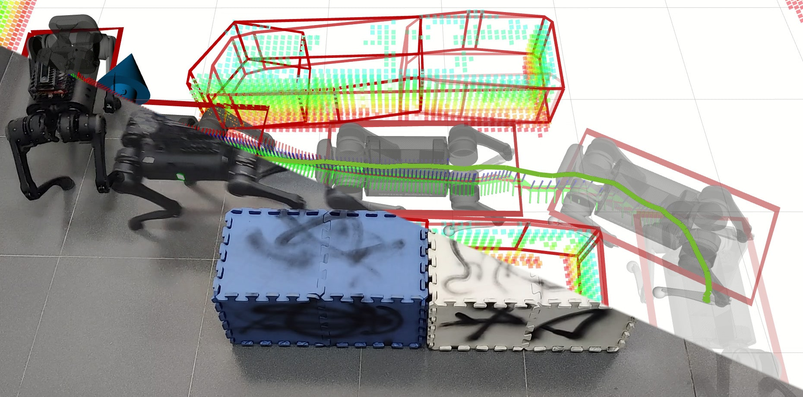
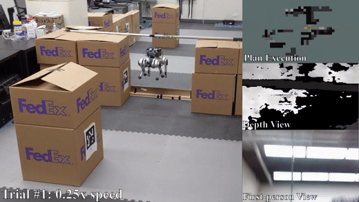
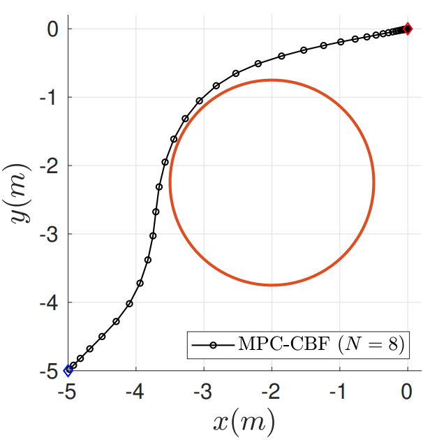
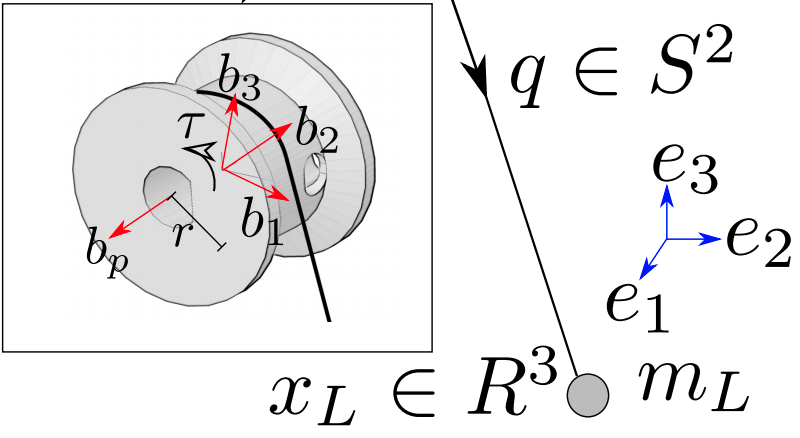
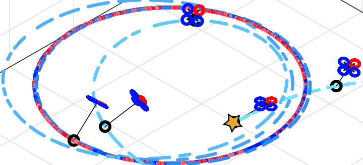

Jun Zeng (曾俊)
I am the Chief Technology Officer (CTO) of Cyan Robotics in Shanghai, where I lead the development of Amoo, an embodied companion robot. I own the company's technical roadmap and architecture decisions, and I lead the engineering team across the full robotics stack — from motion planning and control to large language models — bringing Amoo from engineering prototypes to a real product.My expertise spans control, optimization, motion planning, trajectory generation, reinforcement learning, and machine learning, built through years of work on autonomous navigation for self-driving cars and dynamic robots. Previously, I was a Senior AI/ML Scientist at Cruise, where I developed trajectory generation and large driving models for self-driving vehicles. I received my Ph.D. from the Hybrid Robotics Group at the University of California, Berkeley, under the supervision of Professor Koushil Sreenath, focusing on model-based optimization and learning for robotic systems, including aerial and legged robots. Before that, I studied at École Polytechnique and Shanghai Jiao Tong University (SJTU), with internships at Waymo, PlusAI, and Valeo, and a research assistantship in the Autonomous Systems and Robotics Lab at ENSTA Paris.
I am always glad to have technical discussions and to build new connections — feel free to reach me through my Berkeley email at zengjunsjtu@berkeley.edu.
Education

University of California, Berkeley, Aug 2017 - May 2022
Ph.D. in Mechanical Engineering
Advisor: Prof. Koushil Sreenath
Field: Control, Robotics, Machine Learning

Ecole Polytechnique, Mar 2015 - Aug 2017
Diplôme d'ingénieur in Applied Mathematics and Mechanics

Shanghai Jiao Tong University, Sep 2012 - May 2016
Bachelor of Science and Engineering in Automation
Publications
Selected Publications | Full Publications
* indicates equal contribution.
Walking in Narrow Spaces: Safety-Critical Locomotion Control for Quadrupedal Robots
with Duality-based Optimization
Qiayuan Liao, Zhongyu Li, Akshay Thirugnanam, Jun Zeng, Koushil
Sreenath
IEEE/RSJ International Conference on Intelligent Robots and Systems (IROS), 2023
Publisher /
ArXiv /
YouTube /
GitHub

Autonomous Navigation for Quadrupedal Robots with Optimized Jumping through
Constrained Obstacles
Scott Gilroy*, Derek Lau*, Lizhi Yang*, Ed Izaguirre, Kristen Biermayer, Anxing Xiao,
Mengti Sun, Ayush Agrawal, Jun Zeng, Zhongyu Li, Koushil Sreenath
IEEE International Conference on Automation Science and Engineering (CASE), 2021
Publisher /
ArXiv /
YouTube

A Quadrupedal Robot Leading Human with Leash-Guided Hybrid Physical Interaction
Anxing Xiao*, Wenzhe Tong*, Lizhi Yang*, Jun Zeng, Zhongyu Li, Koushil
Sreenath
IEEE International Conference on Robotics and Automation (ICRA), 2021
Best Paper Award in Service Robotics — Finalist
Publisher /
ArXiv /
YouTube

Safety-Critical Model Predictive Control with Discrete-Time Control Barrier Function
Jun Zeng*, Bike Zhang*, Koushil Sreenath
IEEE American Control Conference (ACC), 2021
Publisher /
ArXiv /
GitHub /
NorCal Control Workshop

Geometric Control and Differential Flatness of a Quadrotor UAV with Load Suspended
from a Pulley
Jun Zeng, Prasanth Kotaru, Koushil Sreenath
IEEE American Control Conference (ACC), 2019
Publisher

Geometric Control of a Quadrotor with a Load Suspended from an Offset
Jun Zeng, Koushil Sreenath
IEEE American Control Conference (ACC), 2019
Publisher
Awards & Honors
- Chin Leung Shui Chun Fellowship, UC Berkeley, 2021
- Graduate Division Block Fellowship, UC Berkeley, 2020-2021
- Mechanical Engineering Department Award, UC Berkeley, 2020
- X Fondation Fellowship, Ecole Polytechnique, 2015-2017
- Ardian Excellence Scholarship, SJTU, 2014
- University Excellence Scholarship, SJTU, 2012-2014
Professional Activities
Teaching
- EECS106B/206B - Robotic Manipulation and Interaction (Spring 2020)
- EECS106A/206A - Introduction to Robotics (Fall 2019)
Peer Reviews
Journal Reviewer- ASME Journal of Dynamic Systems, Measurement, and Control, 2021 - 2025
- Automatica, 2022 - 2026
- IEEE Access, 2022 - 2025
- IEEE Control Systems Letters (L-CSS), 2023 - 2026
- IEEE Open Journal of Control Systems (OJ-CSYS), 2023 - 2025
- IEEE Robotics and Automation Letters (RA-L), 2020 - 2026
- IEEE Transactions on Automatic Control (TAC), 2021 - 2026
- IEEE Transactions on Control of Network Systems (TCNS), 2021 - 2025
- IEEE Transactions on Control Systems Technology (T-CST), 2021 - 2026
- IEEE Transactions on Industrial Electronics (TIE), 2024 - 2026
- IEEE Transactions on Intelligent Transportation Systems (T-ITS), 2026
- IEEE Transactions on Robotics (T-RO), 2023 - 2026
- IEEE Transactions on Systems, Man, and Cybernetics (TSMC), 2026
- IEEE/ASME Transactions on Mechatronics (T-Mech), 2022 - 2026
- International Journal of Robotics Research (IJRR), 2023 - 2025
- International Journal of Robust and Nonlinear Control (RNC), 2023 - 2025
Conference Reviewer
- AAAI Conference on Artificial Intelligence (AAAI), 2022 - 2024
- American Control Conference (ACC), 2023 - 2026
- Annual Conference of the IEEE Industrial Electronics Society (IECON), 2023 - 2025
- European Control Conference (ECC), 2023 - 2025
- IEEE Conference on Control Technology and Applications (CCTA), 2024 - 2025
- IEEE Conference on Decision and Control (CDC), 2022 - 2026
- IEEE International Conference on Robotics and Automation (ICRA), 2020 - 2026
- IEEE International Conference on Unmanned Aircraft Systems (ICUAS), 2020 - 2021
- IEEE/RSJ International Conference on Intelligent Robots and Systems (IROS), 2021 - 2025
- Learning for Dynamics & Control Conference (L4DC), 2023 - 2026